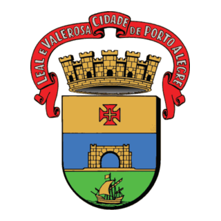

SECRETARIA MUNICIPAL DA
SEGURANÇA PÚBLICA


SECRETARIA MUNICIPAL DA
O programa será apresentado na primeira semana de dezembro.
Garantir um ambiente mais seguro para os Porto Alegrenses é nossa prioridade, com isto em mente, desenvolvemos o projeto POA Segura, que consiste em achar os melhores lugares para o reforço de policiamento, investimentos e implementações de novas tecnologias, isso com base em dados e pesquisas científicas. O programa POA Segura é o mais inovador programa de segurança da história de Porto Alegre, usando cruzamento de dados e mapeamento de crimes, a aplicação consegue identifcar os lugares mais carentes de segurança de cidade. Além disso, o projeto também apresenta soluções para essas situações, como o aumento de policialmente, investimento em novas tecnologias como os totens ja presentes na cidade e entre outros.